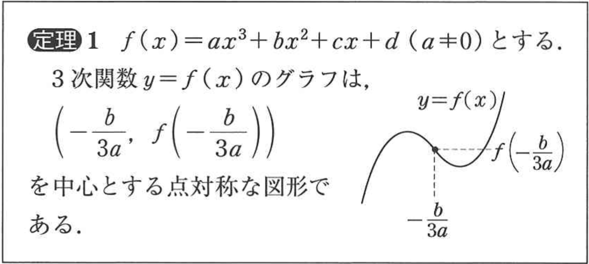
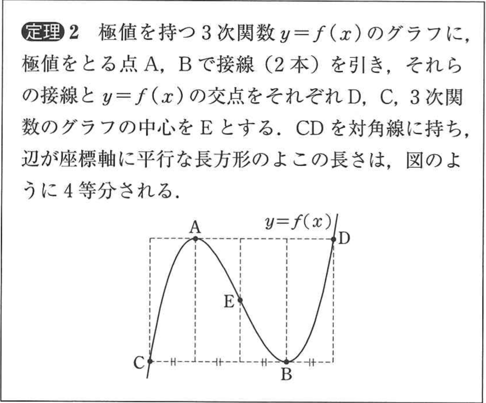
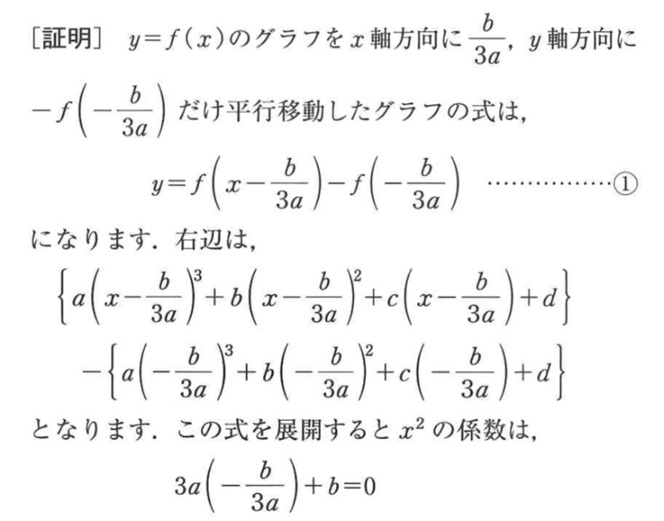
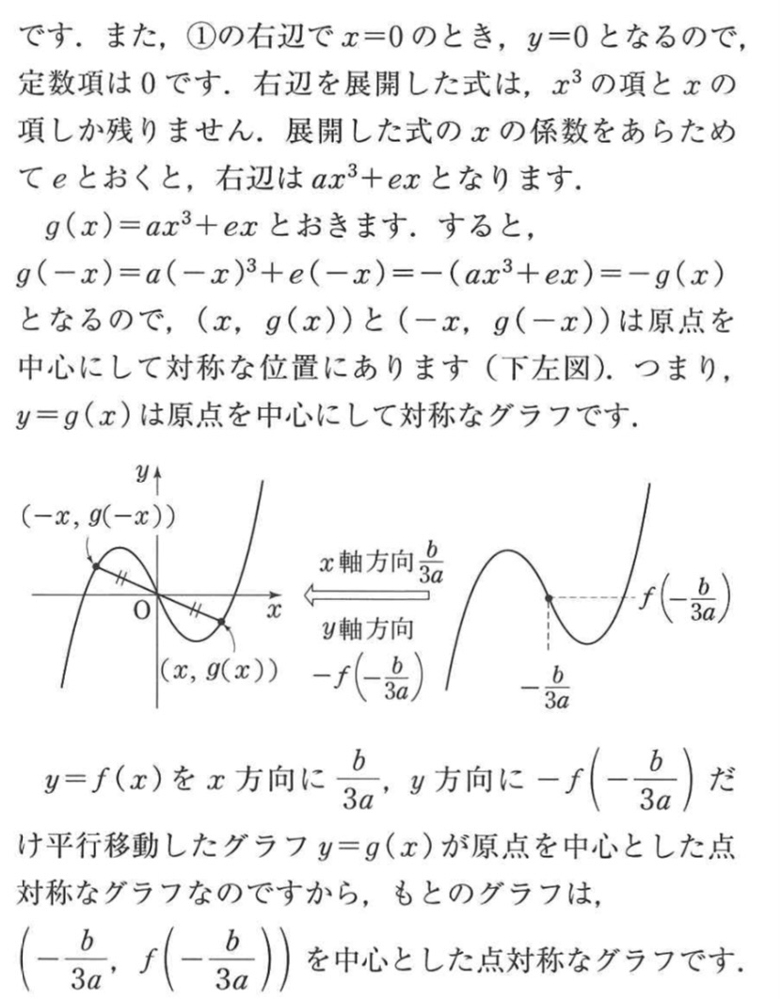
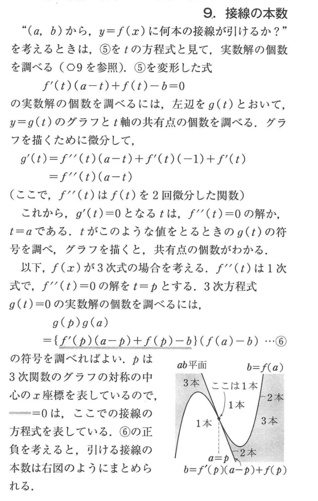
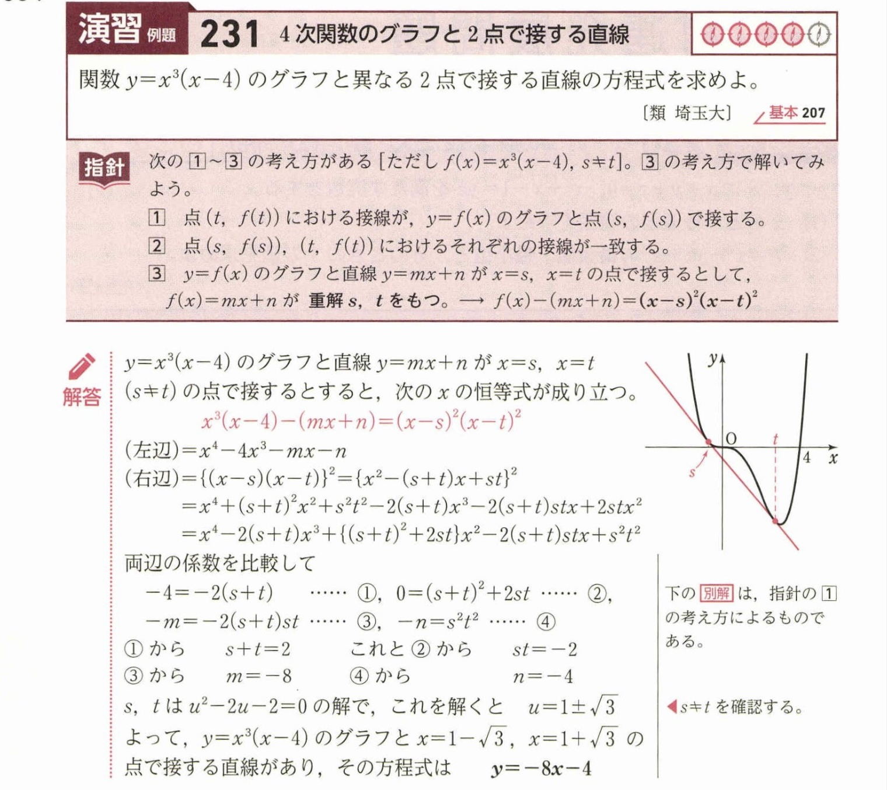
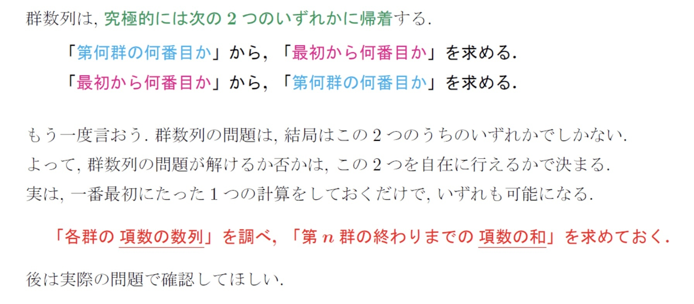
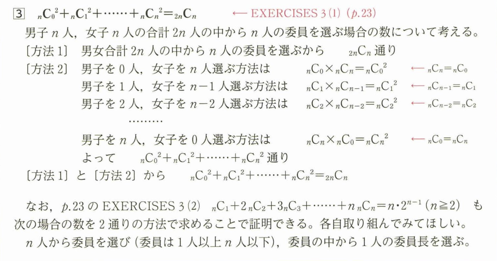

→\(2^p < 10^q\) がギリギリ成り立つ \(p, q\) を探す（今回は \(p = 13, q = 4\)）
→方針をスイッチするポイントになるかも
→次数下げを使うと楽
→\(f'(x) = 0\) の判別式 \(D > 0\)
→導関数の定積分を用いる
〈例題〉
3次関数 \(y = ax^3 + bx^2 + cx + d\) のグラフFは、F上のある点に関して対称であることを示せ。
→グラフは変曲点 \(\left(-\displaystyle\frac{b}{3a},\; f\!\left(-\displaystyle\frac{b}{3a}\right)\right)\) を中心とする点対称な図形である。




①接点をおく→接線の式が立つ
②一般の直線 \(y = mx + n\) をおく（y軸に並行でないに注意）→\(D = 0\) など接する条件を反映
① \(f(\alpha) = g(\alpha)\) かつ \(f'(\alpha) = g'(\alpha)\)
② \(f(x) - g(x)\) が \((x - \alpha)^2\) で割り切れる


群数列は、究極的には次の2つのいずれかに帰着する。
「第何群の何番目か」から、「最初から何番目か」を求める。
「最初から何番目か」から、「第何群の何番目か」を求める。
群数列の問題は、結局はこの2つのうちのいずれかでしかない。よって、群数列の問題が解けるか否かは、この2つを自在に行えるかで決まる。実は、一番最初にたった1つの計算をしておくだけで、いずれも可能になる。
「各群の項数の数列」を調べ、「第 \(n\) 群の終わりまでの項数の和」を求めておく。

→書き下してみるのも一つ（大事）
①n=kを仮定
②n=k, n=k+1を仮定
③\(n \leq k\) を仮定
→\((1+x)^n = {}_nC_0 + {}_nC_1 x + {}_nC_2 x^2 + \cdots + {}_nC_n x^n\) …(＊)を利用する
\(\displaystyle\sum_{k=0}^{8} {}_8C_k\) →n=8, x=1
\(\displaystyle\sum_{k=0}^{16} k \cdot {}_{16}C_k\) →(＊)を微分したものに代入
\(\displaystyle\sum_{k=0}^{8} \displaystyle\frac{{}_8C_k}{k+1}\) →(＊)を0から1で定積分したものに代入
※問題に出てるのを見たことはないが、青チャートに載っていたので一応↓

\({}_nC_k \cdot k = n \cdot {}_{n-1}C_{k-1}\)（n人からk人のメンバーとそのうちの1人の委員長を選ぶ）
\({}_nC_k = {}_{n-1}C_k + {}_{n-1}C_{k-1}\)（ある特定の人を選ぶか選ばないかで場合分け）
※\(\displaystyle\sum_{k=0}^{16} k \cdot {}_kC_{16}\) のような場合（添え字に注目）はこの公式を使って階差に変形
\(k(k-1) \cdot {}_nC_k = n(n-1) \cdot {}_{n-2}C_{k-2}\)（副委員長まで決める場合）
→S−rS法を2回使う
〈例題〉
\(S_n = \displaystyle\sum_{k=1}^{n} k^2 2^k\) を求めよ。
①\(a_{n+1} - a_n =\) 一定 を示す
②\(\{a_n\}\) の一般項が等差数列の形になることを言う
※和の形から言うことはできないことに注意
→初項まで下げて矛盾を言うことが多い
→\(\cos n\theta\) は整数を係数とする \(\cos\theta\) のn次式で表せる
→証明を知っておく
〈例題〉
\(\cos\displaystyle\frac{\pi}{4k}\) が無理数を示せ。
\(k = \displaystyle\frac{1}{2}\{k(k+1) - (k-1)k\}\)
\(k(k+1) = \displaystyle\frac{1}{3}\{k(k+1)(k+2) - (k-1)k(k+1)\}\)
\(k(k+1)(k+2) = \displaystyle\frac{1}{4}\{k(k+1)(k+2)(k+3) - (k-1)k(k+1)(k+2)\}\)
ベクトルの基本方針
→その点を一意に定まるように言葉で説明してベクトルで表す
言わずもがなであるが、青チャートやFGの問題を解けることが特に重要
→証明できるように
→求め方を覚えておく
\(\vec{OP} = k\left(\displaystyle\frac{\vec{a}}{|\vec{a}|} + \displaystyle\frac{\vec{b}}{|\vec{b}|}\right)\)
→片方固定して考える（ベクトルに限らない）